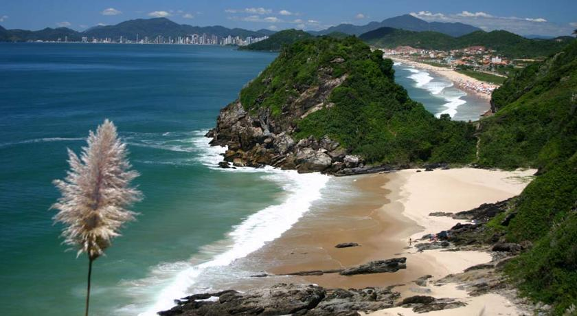
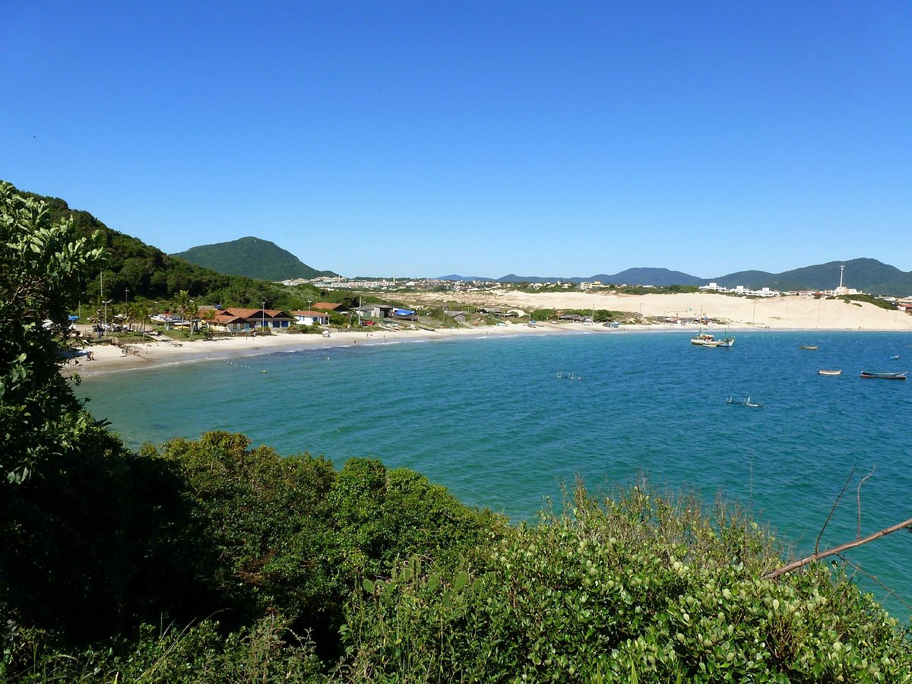

A Praia Brava é um bairro nobre situado ao norte da ilha de Santa Catarina, no município de Florianópolis, capital do estado brasileiro de Santa Catarina e oferece uma água limpa e cristalina, além de belezas naturais e ótimas ondas para o surf e bodyboarding. A areia é fina, amarela e macia..
Praia da Joaquina é uma praia oceânica da cidade brasileira de Florianópolis, ao leste da ilha de Santa Catarina, ao sul do Brasil. O ponto procurado por surfistas, já foi sede de alguns campeonatos mundiais de surfe. A denominação da praia é recente, aparecendo pela primeira vez em mapas a partir de 1975

A praia dos Ingleses está situada no bairro de Ingleses, norte da ilha de Santa Catarina, no municipio de Florianópolis, capital do estado brasileiro de Santa Catarina. 